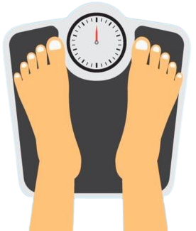

Bienvenido ¿deseas calcular tú IMC?
¿Qué es el IMC?
El índice de masa corporal (IMC) es un número que se calcula con base en el peso y la estatura de la persona. Para la mayoría de las personas, el IMC es un indicador confiable de la gordura y se usa para identificar las categorías de peso que pueden llevar a problemas de salud.